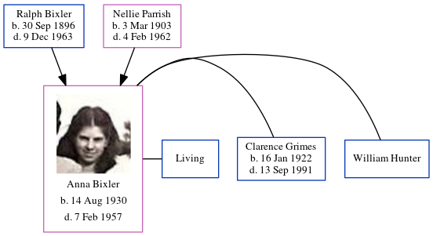

Floyd Allen Addy 1914 - 1991
[ Home ] | [ Calendar ] | [ Surnames Index ] | [ Errors ] | [ Family History ]Floyd Addy, the husband of Ruth Marie Bixler (the fifth cousin once-removed on the mother's side of Nigel Horne), was born in Clay City, Clay, Indiana, USA on 21 Jun 19141,2,3 and married Ruth (with whom he had 3 children: Rosalee, Wanda Lee and Debra Sue, along with 2 surviving children) in Brazil, Clay, Indiana, USA on 12 Nov 19384.
During his life, he was living in Sugar Ridge, Indiana on 1 Apr 19307; and in Morgan, Owen, Indiana in 19405 and on 1 Apr 19406.
He died on 25 Mar 1991 in Bloomington, Monroe, Indiana1,2 and was buried at Riverside Cemetery, Spencer, Owen, Indiana after 25 Mar 1991.
Children
- Wanda Lee was born on 1 Aug 1941
Citations
- Social Security Death Index - Findmypast
- United States Billion Graves index - Findmypast
- United States Marriages - Findmypast
- United States Marriages - Findmypast
- US Census 1940 - Findmypast
- US Census 1940 - Findmypast (was age 25 and the head of the household)
- US Census 1930 - Findmypast (was age 15 and the son of the head of the household)
Media
Floyd Addy - Ruth Bixler - gravestone

Floyd Allen Addy
United States Marriages - FS/MAR/40537923/1
US Census 1940 - USC/1940/1455772101
US Census 1930 - USC/1930/004950597/00467/038
Social Security Death Index - USBMD/SSDI/515058374
United States Billion Graves index - US/BMD/BILLION/011342922
Family Tree
Map
Generated by ged2site. Last updated on Jul 3, 2024
Known Issues
Burial place (Spencer, Owen, Indiana, USA) has no citations
No records of living with anyone
Adding date of burial as 'aft 25 Mar 1991'